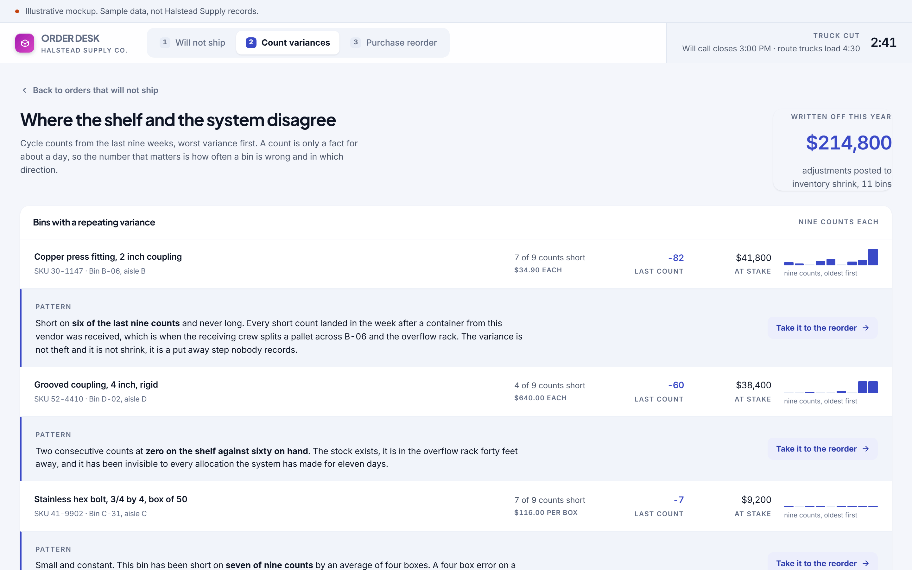
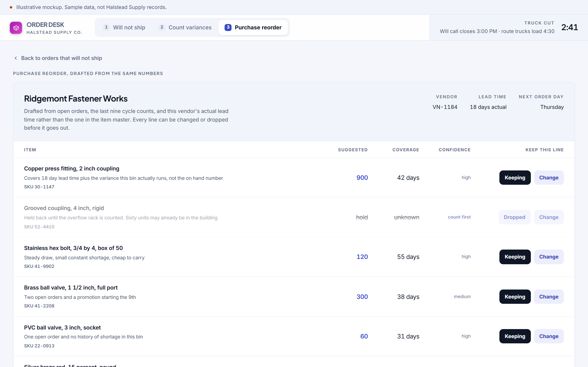
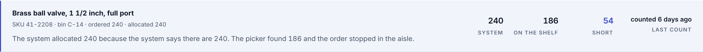
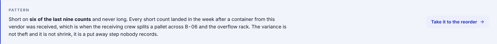
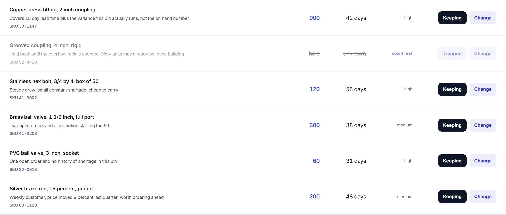

Concept, built to show the software behind a manual role. Not delivered client work.
The margin leaks where the shelf and the system disagree.
Six orders stopped this morning. Not one of them stopped because a customer changed something.
The role you would hire for
The role is entering orders, allocating stock, running cycle counts, reconciling variances, and placing replenishment purchase orders with a handful of vendors. It lives inside the enterprise system and it is judged on speed and accuracy at the counter.
The manual process that implies
An order comes in, the clerk allocates against the quantity on hand, and a picker discovers the truth in the aisle. The variance gets written off as a miscount because four boxes is not worth an investigation. Nine counts later the same bin is still short, the same customer is still standing at the will call counter, and the purchase order that would have fixed it was calculated from the number that was wrong.
$99,850
of orders stopped in the aisle by stock the system said was on the shelf
The variance between what the system says is on the shelf and what is actually there is where the margin leaks. A count history is already in the system. Nothing connects it to the allocation that promised the stock.
Three screens
Built to be read in a screenshot, then clicked through by whoever it lands with.



Detail
The three places where this stops being a report and starts being a tool.



What it would take to build for real
The concept is a proposal about the shape of the work. This is the honest version of the rest.
What it reads
Open orders and allocations, the cycle count history that is already being recorded, receiving records, and the vendor lead times that can be measured from purchase order history instead of trusted from the item master.
What it writes
A flag on an allocation that is unlikely to pick clean, a count task for a bin that is drifting, and a purchase order draft the buyer edits before it goes.
What is genuinely hard
Nothing about the data. The hard part is being right often enough that the buyer stops checking every line, and being obviously wrong in a way they can correct in one click when the model is off.
Shape of the work
Four to six weeks. Roughly $10,000 to $16,000. The variance history is usually sitting in the existing system already, which makes the first useful screen fast.
Every engagement is staffed with a dedicated team and a named project lead who works directly with the person who owns the process. The software above was built before anyone paid for anything, which is the point.